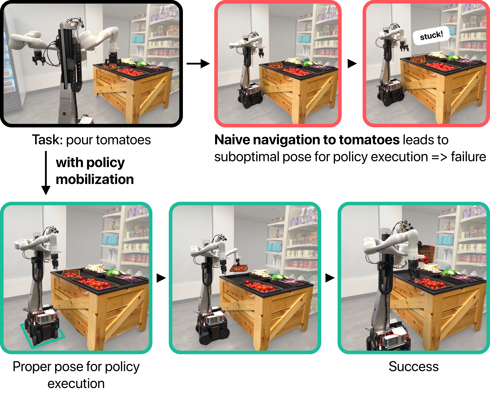
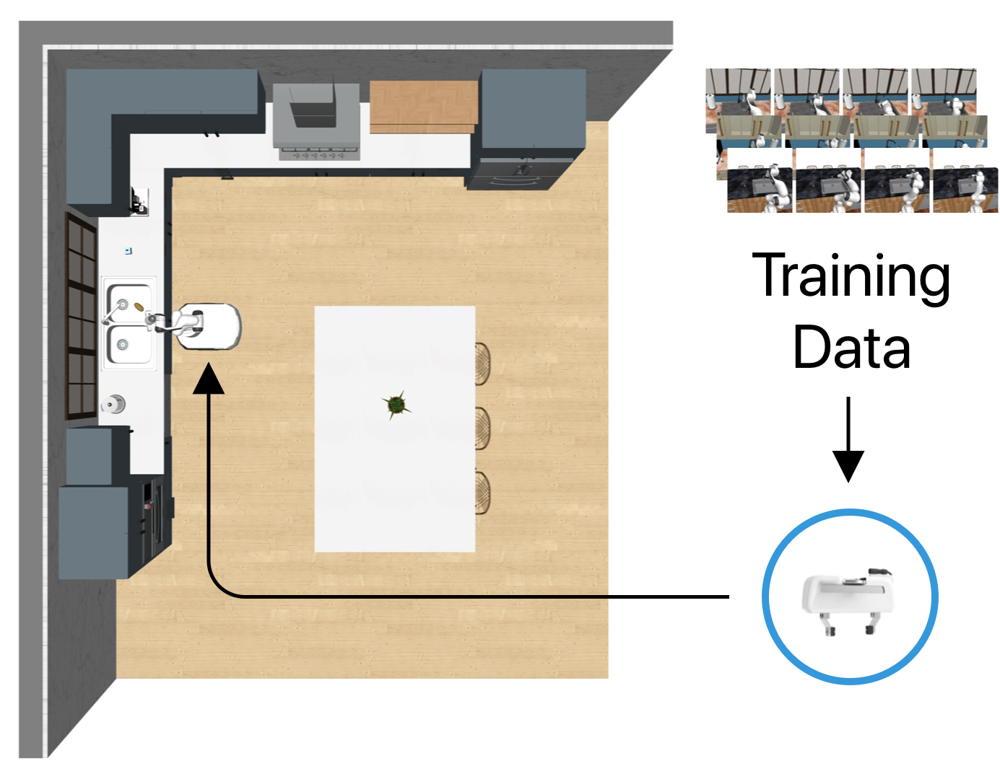
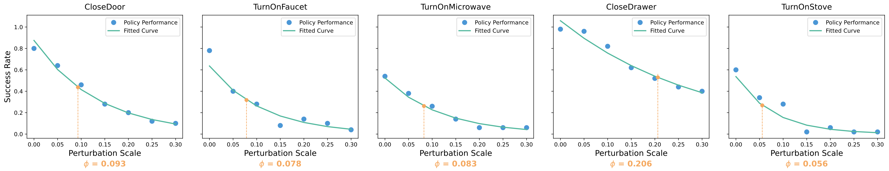
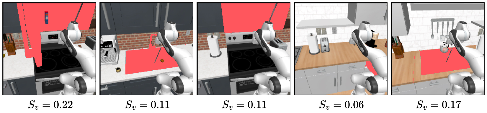
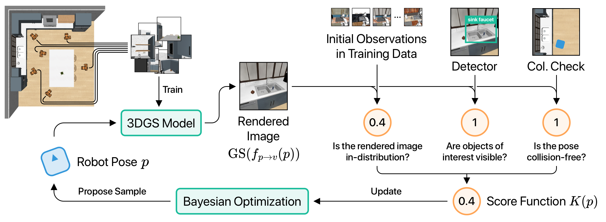

Mobi-π: Mobilizing Your Robot Learning Policy
Jingyun Yang1 Isabella Huang2 Brandon Vu1
Max Bajracharya2 Rika Antonova3 Jeannette Bohg1
1Stanford University 2Toyota Research Institute 3University of Cambridge

Video
The Policy Mobilization Problem
The policy mobilization problem is, in simple words, the problem of taking an existing manipulation policy that has been trained on data that was collected from only one or a limited set of viewpoints and finding the optimal robot pose in an unseen environment to successfully execute this policy.
To study policy mobilization, we propose the Mobi-\(\pi\) framework, which provides metrics for understanding mobilization feasibility, simulated benchmarks and tools across diverse layouts and textures, and baselines.

Simulated Task Suite for Evaluating Policy Mobilization
To effectively study the policy mobilization problem, we develop a suite of simulation environments with RoboCasa as a benchmarking setup. We pick five single-stage manipulation tasks from the RoboCasa benchmark.
Below, we visualize two sample successful episodes for each task. All tasks take place in diverse visual environments. In the Close Door task, the robot might encounter either a cabinet door or a microwave door. The Turn on Faucet, Turn on Microwave, and Turn on Stove tasks require accurate robot placement to be executed correctly. In the Close Drawer task, the drawer can be either on the left or right side of the robot.
Metrics
How to know if your policies and scenes are difficult for policy mobilization method? We design two metrics for investigating mobilization feasibility.
Spatial Mobilization Metric. To quantify how feasible a policy can be mobilized from a spatial perspective, we evaluate how pose perturbations affect the task success of fixed-based manipulation policies. Specifically, we measure the task success \(S_\pi(\sigma)\) of policy \(\pi\) given Gaussian noise applied to the base pose modeled as \(N\sim(\mu=0, \sigma^2)\). We then fit an exponential curve using the following form: $$S_\pi(\sigma) = S_{\pi}(\sigma=0) \cdot e^{-\gamma \sigma}.$$ From this fitted curve, we extract the mobilization feasibility metric: $$\phi = \frac{\ln 2}{\gamma}.$$
This metric \(\phi\) can be interpreted as the deviation of the base pose in meters, which causes the policy success rate to drop by half. The higher \(\phi\), the easier it should be to mobilize this policy as its success rate does not decay as fast with deviations from the training pose.

Visual Mobilization Metric. In addition to the spatial mobilization feasibility metric, the visual appearance of the tasks can also affect how easy or difficult it is to mobilize a robot policy. For example, if a policy manipulates an object while barely seeing the object in view, then it would be more difficult to find an appropriate location for starting policy execution.
To quantify this, we evaluate how prominently relevant objects of the task are represented in the scene. Formally, we sample \(N_v\) images of the scene at near-optimal poses and compute the average percentage \(S_v\) of the images occupied by the objects of interest in the task.

Methods for Policy Mobilization
As part of the Mobi-\(\pi\) framework, we propose a novel method tailored to the policy mobilization problem. The goal of our method is to find a proper robot pose \(p\) for policy initialization such that a given policy \(\pi\) trained from demonstration data \(\mathcal{D}\) can be successfully executed in a scene \(S\).
- A proposed robot pose \(p\) is converted to its corresponding camera pose \(v\) via \(v = f_{p \to v}(p)\), which is then sent into a 3D Gaussian Splatting model to produce a rendered image.
- The rendered image and the proposed robot pose are passed into a hybrid score function \(K\) that predicts whether the proposed robot pose is suitable for policy initialization.
- The score function output is used to update a Bayesian Optimization algorithm, which repeatedly proposes new sampled robot poses to be evaluated and updates its internal belief on which robot poses are optimal for robot policy execution.
The hybrid score function is composed of multiple parts powered by visual foundation models so that it can judge whether the proposed pose: (a) is in distribution with respect to the training dataset; (b) has the objects of interest in view; and (c) is collision-free.

Real Robot Setup
We demonstrate our method on three real-world tasks in a grocery environment. Our setup includes a bimanual robot mounted on a holonomic robot base.
Pour Tomatoes
Pick Chips
Bimanual Grab Paper Towels
Real Robot Results
We compare our method with three baselines: LeLaN, VLFM, and a Human baseline. In this human baseline, we verbally ask users to manually drive the robot to where they believe is the optimal starting base pose for it to execute each manipulation task successfully, without providing any information on how the policy was trained.
We initialize the robot at 10 random poses 0.5 to 1.5 meters away from the target policy execution pose with the constraint that the robot must have the target scene within the field of view. Starting from the initial poses, we execute each baseline method as well as our proposed method.
| Pick Chips | Grab Paper Towels | Pour Tomatoes | |||||||||||
|---|---|---|---|---|---|---|---|---|---|---|---|---|---|
| Fatal | Nav | Grasp | Success | Fatal | Nav | Grab | Success | Fatal | Nav | Grasp | Pour | Success | |
| LeLaN | 10/10 | 0/10 | 0/10 | 0/10 | 10/10 | 0/10 | 0/10 | 0/10 | 10/10 | 0/10 | 0/10 | 0/10 | 0/10 |
| BC w/ Nav | 4/10 | 3/10 | 0/10 | 0/10 | 7/10 | 3/10 | 3/10 | 3/10 | 2/10 | 8/10 | 7/10 | 7/10 | 7/10 |
| Humans | 2/10 | 8/10 | 2/10 | 2/10 | 0/10 | 10/10 | 4/10 | 4/10 | 0/10 | 8/10 | 2/10 | 2/10 | 2/10 |
| Ours | 0/10 | 10/10 | 7/10 | 7/10 | 0/10 | 10/10 | 10/10 | 10/10 | 0/10 | 10/10 | 9/10 | 9/10 | 8/10 |
Below we show qualitative rollout videos of each baseline and method in all three tasks. All videos are played at 2x speed.
Pour Tomatoes
IL w/ Nav
LeLaN
Human
Our Method
Pick Chips
IL w/ Nav
LeLaN
Human
Our Method
Bimanual Grab Paper Towels
IL w/ Nav
LeLaN
Human
Our Method
BibTeX
If you produce new research inspired or based on our work, please make sure to cite us using the bibtex below.
@inproceedings{yang2025mobipi,
title={Mobi-$\pi$: Mobilizing Your Robot Learning Policy},
author={Yang, Jingyun and Huang, Isabella and Vu, Brandon and Bajracharya, Max and Antonova, Rika and Bohg, Jeannette},
booktitle={Proceedings of Robotics: Science and Systems (RSS)},
year={2025}
}